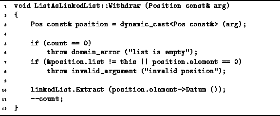

Data Structures and Algorithms
with Object-Oriented Design Patterns in C++
Data Structures and Algorithms
with Object-Oriented Design Patterns in C++
The final ListAsLinkedList member function to be considered
is the version of Withdraw that takes as its lone argument
a reference to a Position.
The function removes an arbitrary item from an ordered list,
where the position of that item is specified by an instance of
ListAsLinkedList::Pos.
The code for the Withdraw function is given in Program  .
.

Program: ListAsLinkedList Class Withdraw Member Function Definition
The Withdraw function first converts its Position argument to the appropriate type--a ListAsLinkedList::Pos. It then performs validity checks on that position, checking that the position refers to this list, and that the position is valid. The item at the specified position in the list is removed from the linked list by calling the Extract function provided by LinkedList<T>.
The running time of the Withdraw member function of the ListAsLinkedList class depends on the running time of the Extract of the LinkedList<T> class. The latter was shown to be O(n) where n is the number of items in the linked list. Consequently, the total running time is O(n).
 Copyright © 1997 by Bruno R. Preiss, P.Eng. All rights reserved.
Copyright © 1997 by Bruno R. Preiss, P.Eng. All rights reserved.